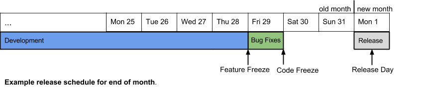

Checker Framework Development Process
This document describes the process and timeline for a Checker Framework development milestone.
The important deadlines are described as well as what happens when a deadline is missed.
A checklist is also provided of things a release person must do. If you are a release person,
please read this document in its entirety once, and in future releases you may read only the
checklist each time. If you make changes to this document, make sure changes a release person
must know about are included in the checklist. Background or reference information
may be added to the other sections.
If you are not a release person and just wish to understand the development process, please
skip to this section.
Checklist of steps a release person must follow
- First day of the development milestone:
- If you have not done so before, follow the steps in the Pre-release Checklist
in the Release Process document. These steps are important not just for the work performed on release day but
also for other work perfomed throughout the release. Some of these steps can take days to complete as they
involve obtaining permissions to access projects on various web sites.
- Plan the feature freeze, code freeze and release dates for the following two months, and send an e-mail to the
checker-framework-dev, annotation-tools-dev and jsr308-langtools-dev mailing lists with these dates.
Also please make sure to add these dates to the "Checker Framework Developers" Google Calendar.
We should aim to release on the first business day of the month. Whenever possible, avoid releasing
near the end of a month instead of the beginning of the next month, as that makes it easier for users
to keep track of the cadence of our releases (e.g. having a June 1st and a June 30th release makes
it harder to tell that the June 30th release is meant for distribution in the month of July).
- One week before Feature Freeze:
- Remind bug owners of their bugs outstanding.
- Two business days before Feature Freeze:
- E-mail checker-framework-dev, annotation-tools-dev and jsr308-langtools-dev reminding
users of the upcoming Feature Freeze and the requirements for this deadline, including
the requirement for changelogs to be complete.
- The work morning after Feature Freeze:
- Ensure that all the continuous integration jobs are passing.
- Ensure that
the changelogs and documentation for the Checker Framework, Type Annotations Compiler and AFU are complete by following
these instructions up to and including the "Review the changelogs and documentation" step.
- E-mail Mike asking him to vet the changelogs
that are checked in.
- E-mail checker-framework-dev, annotation-tools-dev and jsr308-langtools-dev reminding
users of the upcoming Code Freeze and the requirements for this deadline.
- The work morning after Code Freeze:
Recommendations/notes for the release person
- As the release person, consider pushing your bug fixes at least two days prior to the code freeze deadline — this is because you
are likely to be helping other people make their Jenkins projects become green during those two days.
- The reason Mike must be asked to look at the changelogs right after feature freeze (instead of
code freeze) is that there no longer is a "recall class" bug fix period, so there is now only one
working day between feature freeze and the release.
This ensures that there are no delays in releasing the products (due to
incomplete changelogs) or in sending the announcement e-mail.
If during the bug fixing period anyone fixes a bug that is worth mentioning as more
than a number, the changelog can be amended accordingly and Mike can be warned about it.
Milestone Phases
|
Development
|
Bug fixing
|
Release
|
|
(Varies, typically 3 to 4 weeks)
|
1 business day
|
1 business day
|
|
Deadlines:
|
Feature freeze
|
Code freeze
|
Release
|
Example timeline:

Description of the phases and deadlines
Development
During the development phase, arbitrarily large or complex changes may be pushed.
Feature freeze
By the feature freeze deadline, all new feature code, associated tests, and documentation
must be pushed. If a feature is not complete by this time, then it should be delayed until the next
release. By this time, all users should update the relevant project’s changelog to include
features and bug fixes they have made during this development cycle (not including bug fixes made
in the day that follows).
Bug fixing
During this phase bugs are fixed, including minor bugs that may have been discovered
(by the new tests or otherwise) in the feature implementation or documentation. You are allowed
to fix any bug that you want, add new tests and documentation, etc., during this time. But no
new features may be implemented. Example bugs that would be fixed during this phase are bugs
revealed by Jenkins that were not revealed by the test suites that were run before pushing a feature.
Code freeze
By code freeze, the code is assumed to be in a shippable state. Pushes to the
repository are no longer allowed.
Release
The person responsible for making the release runs the release scripts and other manual tasks
for the release (note that any pushes during this phase force the automated tests to restart and
are likely to delay the release).
Deadline enforcement
The following are only enforced for the 'master' branch from which the release is performed:
- Any large or complex change (i.e. a feature change or a design change) pushed after
feature freeze will be reverted.
- Any fix for a bug pushed after code freeze for which an exception was not made will be reverted.
- If a critical bug is discovered late and its fix is not checked in with enough time
for Jenkins tests to complete before Release Day, then the release is delayed.